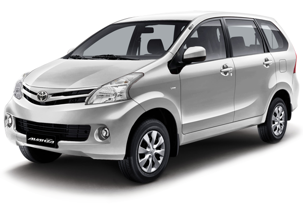
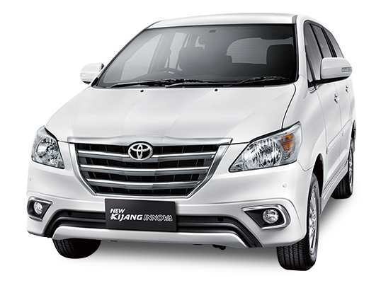
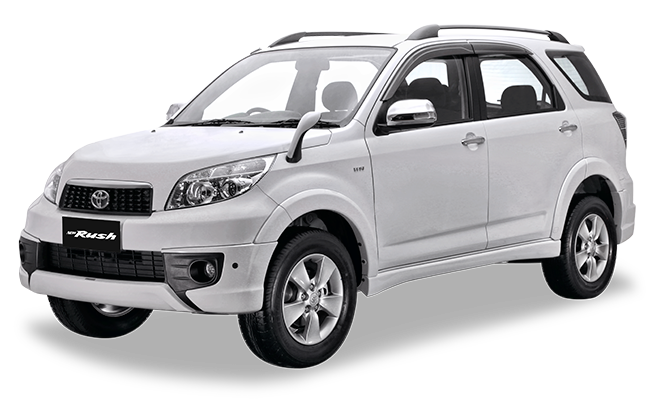
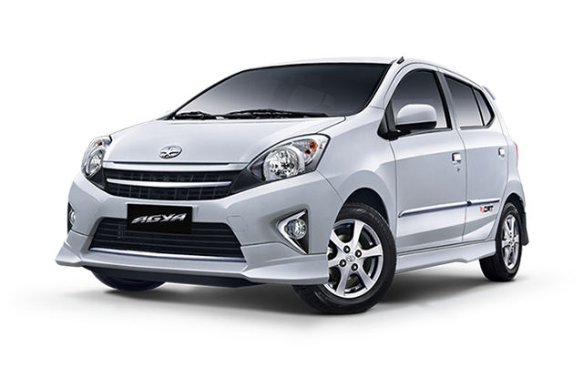

|  | |
NEW AVANZA 1,3 E M/T 199.350.000 NEW AVANZA 1,3 E A/T 210.550.000 NEW AVANZA 1,3 G M/T 215.400.000 NEW AVANZA 1,3 G A/T 227.100.000 NEW AVANZA 1,5 G M/T 223.000.000 |
CATATAN : Harga On The Road (OTR) untuk wilayah Samarinda dan sekitarnya per April 2014 Harga sewaktu-waktu dapat berubah tanpa pemberitahuan terlebih dahulu Gratis Biaya Jasa Service hingga 50.000 km / 4 Tahun Regular Service hanya setiap 10.000 km Garansi 3 tahun/100.000 km * Spesifikasi detail dapat berbeda dengan mobil sesungguhnya. Untuk konfirmasi lebih lanjut mohon menghubungi Saya Riduan. |
|  | |
BENSIN INNOVA G M/T BENSIN 307.540.000 INNOVA G A/T BENSIN 321.840.000 INNOVA G M/T DIESEL 323.540.000 INNOVA G A/T DIESEL 337.740.000 |
CATATAN : Harga On The Road (OTR) untuk wilayah Samarinda dan sekitarnya per April 2014 Harga sewaktu-waktu dapat berubah tanpa pemberitahuan terlebih dahulu Gratis Biaya Jasa Service hingga 50.000 km / 4 Tahun Regular Service hanya setiap 10.000 km Garansi 3 tahun/100.000 km * Spesifikasi detail dapat berbeda dengan mobil sesungguhnya. Untuk konfirmasi lebih lanjut mohon menghubungi Saya Riduan. |
|  | |
NEW FORTUNER G A/T LUX BENSIN 508.815.000 NEW FORTUNER G A/T LUX TRD BENSIN 537.765.000 NEW FORTUNER V A/T BENSIN 561.915.000 NEW FORTUNER G M/T DIESEL 453.815.000 NEW FORTUNER G M/T TRD DIESEL 478.965.000 NEW FORTUNER G A/T DIESEL 464.815.000 NEW FORTUNER G A/T TRD DIESEL 489.965.000 |
CATATAN : Harga On The Road (OTR) untuk wilayah Samarinda dan sekitarnya per April 2014 Harga sewaktu-waktu dapat berubah tanpa pemberitahuan terlebih dahulu Gratis Biaya Jasa Service hingga 50.000 km / 4 Tahun Regular Service hanya setiap 10.000 km Garansi 3 tahun/100.000 km * Spesifikasi detail dapat berbeda dengan mobil sesungguhnya. Untuk konfirmasi lebih lanjut mohon menghubungi Saya Riduan. |
|  | |
AGYA 1,0 E M/T 113.997.000 AGYA 1,0 E A/T 124.797.000 AGYA 1,0 G M/T 120.997.000 AGYA 1,0 G A/T 131.047.000 AGYA 1,0 S M/T/TRD 125.497.000 AGYA 1,0 S A/T TRD 135.547.000 |
CATATAN : Harga On The Road (OTR) untuk wilayah Samarinda dan sekitarnya per April 2014 Harga sewaktu-waktu dapat berubah tanpa pemberitahuan terlebih dahulu Gratis Biaya Jasa Service hingga 50.000 km / 4 Tahun Regular Service hanya setiap 10.000 km Garansi 3 tahun/100.000 km * Spesifikasi detail dapat berbeda dengan mobil sesungguhnya. Untuk konfirmasi lebih lanjut mohon menghubungi Saya Muhammad Riduan. |

 muh.khallad@gmail.com
muh.khallad@gmail.com
 76944C3B
76944C3B